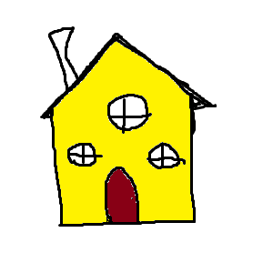

Maja Pildikaart
Hiire klikk on akna, seina ja katuse harja seina peal

Aken on hoone, sõiduki või muu objekti seinas, katuses või ukses paiknev ava, mis tavaliselt võimaldab lasta sisse valgust ja õhku.